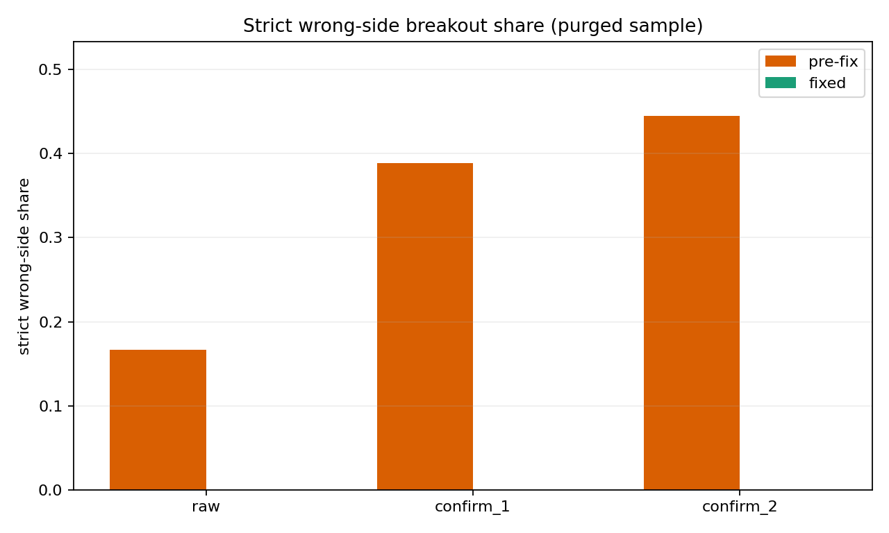
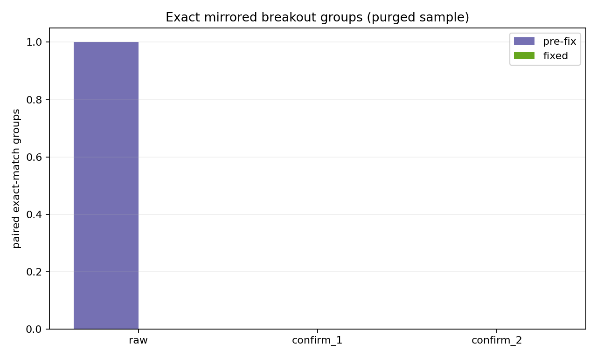

生成时间：2026-03-14T00:08:53.605005+00:00 ｜ old baseline = 01ad061（R2/R3 前） ｜ fixed head = c540d00 ｜ 页面定位：A4-c 最小 closure，不是全量 v3 正式重跑。
在同一份 BTC + ETH / 20d / 60m 最小样本上，修正后的 sampler 确实把我们关心的两类 breakout 脏样本清掉了：strict wrong-side rows 归零，exact mirrored pair groups 也归零；同时 breakout 样本没有被“一刀切删光”。
BTC-USD, ETH-USD，20d，60m。72，snapshot step 24，confirm bars 2，tol mult 0.08，horizons 6, 24, 48, 72。先看两张图：左图是 strict wrong-side 占比，右图是 exact mirrored pair group 数。只要 fixed 一侧降到 0，我们就知道 R2/R3 至少在这份最小 fresh rerun 里起效了。


| variant | stage | family | events | strict_wrong_side_rows | strict_wrong_side_share | support_rows | support_wrong_side_rows | support_wrong_side_share | resistance_rows | resistance_wrong_side_rows | resistance_wrong_side_share |
|---|---|---|---|---|---|---|---|---|---|---|---|
| pre_fix | raw | breakout_raw | 346 | 53 | 0.153179 | 165 | 30 | 0.181818 | 181 | 23 | 0.127072 |
| pre_fix | raw | breakout_confirm_1 | 275 | 50 | 0.181818 | 127 | 26 | 0.204724 | 148 | 24 | 0.162162 |
| pre_fix | raw | breakout_confirm_2 | 250 | 48 | 0.192000 | 118 | 28 | 0.237288 | 132 | 20 | 0.151515 |
| fixed | raw | breakout_raw | 310 | 0 | 0.000000 | 147 | 0 | 0.000000 | 163 | 0 | 0.000000 |
| fixed | raw | breakout_confirm_1 | 243 | 0 | 0.000000 | 112 | 0 | 0.000000 | 131 | 0 | 0.000000 |
| fixed | raw | breakout_confirm_2 | 216 | 0 | 0.000000 | 100 | 0 | 0.000000 | 116 | 0 | 0.000000 |
| pre_fix | purged | breakout_raw | 18 | 3 | 0.166667 | 8 | 1 | 0.125000 | 10 | 2 | 0.200000 |
| pre_fix | purged | breakout_confirm_1 | 18 | 7 | 0.388889 | 8 | 3 | 0.375000 | 10 | 4 | 0.400000 |
| pre_fix | purged | breakout_confirm_2 | 18 | 8 | 0.444444 | 8 | 3 | 0.375000 | 10 | 5 | 0.500000 |
| fixed | purged | breakout_raw | 18 | 0 | 0.000000 | 8 | 0 | 0.000000 | 10 | 0 | 0.000000 |
| fixed | purged | breakout_confirm_1 | 18 | 0 | 0.000000 | 8 | 0 | 0.000000 | 10 | 0 | 0.000000 |
| fixed | purged | breakout_confirm_2 | 18 | 0 | 0.000000 | 8 | 0 | 0.000000 | 10 | 0 | 0.000000 |
| variant | stage | family | paired_groups | rows_in_paired_groups | rows_to_drop_if_resolved |
|---|---|---|---|---|---|
| pre_fix | raw | breakout_raw | 6 | 12 | 6 |
| pre_fix | raw | breakout_confirm_1 | 1 | 2 | 1 |
| pre_fix | raw | breakout_confirm_2 | 1 | 2 | 1 |
| fixed | raw | breakout_raw | 0 | 0 | 0 |
| fixed | raw | breakout_confirm_1 | 0 | 0 | 0 |
| fixed | raw | breakout_confirm_2 | 0 | 0 | 0 |
| pre_fix | purged | breakout_raw | 1 | 2 | 1 |
| pre_fix | purged | breakout_confirm_1 | 0 | 0 | 0 |
| pre_fix | purged | breakout_confirm_2 | 0 | 0 | 0 |
| fixed | purged | breakout_raw | 0 | 0 | 0 |
| fixed | purged | breakout_confirm_1 | 0 | 0 | 0 |
| fixed | purged | breakout_confirm_2 | 0 | 0 | 0 |
答案：没有。fix 主要是在清理坏 breakout，而不是把 breakout family 整体抹掉。
| variant | stage | family | events |
|---|---|---|---|
| pre_fix | raw | breakout_raw | 346 |
| pre_fix | raw | breakout_confirm_1 | 275 |
| pre_fix | raw | breakout_confirm_2 | 250 |
| fixed | raw | breakout_raw | 310 |
| fixed | raw | breakout_confirm_1 | 243 |
| fixed | raw | breakout_confirm_2 | 216 |
| pre_fix | purged | breakout_raw | 18 |
| pre_fix | purged | breakout_confirm_1 | 18 |
| pre_fix | purged | breakout_confirm_2 | 18 |
| fixed | purged | breakout_raw | 18 |
| fixed | purged | breakout_confirm_1 | 18 |
| fixed | purged | breakout_confirm_2 | 18 |
这张表的作用很有限：只是确认修复后 side-level 统计仍然能产出不同数值，而不是所有 breakout side 都被机械压成同一个结果。它不是“support / resistance 已可独立交易”的证据。
| variant | stage | event_type | events | mean_ret | median_ret | up_ratio |
|---|---|---|---|---|---|---|
| pre_fix | purged | support_breakout_raw | 8 | 0.004526 | -0.013526 | 0.250 |
| pre_fix | purged | resistance_breakout_raw | 10 | 0.024137 | 0.029569 | 0.700 |
| pre_fix | purged | support_breakout_confirm_1 | 8 | -0.009966 | -0.009941 | 0.250 |
| pre_fix | purged | support_breakout_confirm_2 | 8 | -0.006860 | -0.014554 | 0.250 |
| pre_fix | purged | resistance_breakout_confirm_1 | 10 | 0.027038 | 0.031572 | 0.800 |
| pre_fix | purged | resistance_breakout_confirm_2 | 10 | 0.028064 | 0.029900 | 0.600 |
| fixed | purged | support_breakout_raw | 8 | 0.004815 | -0.013526 | 0.250 |
| fixed | purged | resistance_breakout_raw | 10 | 0.023314 | 0.029569 | 0.700 |
| fixed | purged | support_breakout_confirm_1 | 8 | -0.008678 | -0.010149 | 0.250 |
| fixed | purged | support_breakout_confirm_2 | 8 | -0.003262 | -0.007224 | 0.375 |
| fixed | purged | resistance_breakout_confirm_1 | 10 | 0.030017 | 0.029526 | 0.700 |
| fixed | purged | resistance_breakout_confirm_2 | 10 | 0.031149 | 0.023960 | 0.700 |
如果想逐条看旧逻辑下哪些 bar 同时留下了 support / resistance 两边 breakout，可以先看这里。
| variant | stage | family | symbol | event_family | event_timestamp | confirm_timestamp | action_timestamp | group_rows | support_rows | resistance_rows | event_types | engine_line_ids |
|---|---|---|---|---|---|---|---|---|---|---|---|---|
| pre_fix | raw | breakout_raw | BTC-USD | breakout_raw | 2026-02-26 02:00 | 2026-02-26 02:00 | 2026-02-26 03:00 | 2 | 1 | 1 | support_breakout_raw | resistance_breakout_raw | S-[37,38,45] | R-[66,67,71] |
| pre_fix | raw | breakout_raw | BTC-USD | breakout_raw | 2026-03-08 00:00 | 2026-03-08 00:00 | 2026-03-08 01:00 | 2 | 1 | 1 | support_breakout_raw | resistance_breakout_raw | S-[67,68,70,71] | R-[1,21,67] |
| pre_fix | raw | breakout_raw | ETH-USD | breakout_raw | 2026-03-03 03:00 | 2026-03-03 03:00 | 2026-03-03 04:00 | 2 | 1 | 1 | support_breakout_raw | resistance_breakout_raw | S-[0,24,37] | R-[64,68,69] |
| pre_fix | raw | breakout_raw | ETH-USD | breakout_raw | 2026-03-06 05:00 | 2026-03-06 05:00 | 2026-03-06 06:00 | 2 | 1 | 1 | support_breakout_raw | resistance_breakout_raw | S-[6,65,66] | R-[46,68,71] |
| pre_fix | raw | breakout_raw | ETH-USD | breakout_raw | 2026-03-07 13:00 | 2026-03-07 13:00 | 2026-03-07 14:00 | 2 | 1 | 1 | support_breakout_raw | resistance_breakout_raw | S-[3,67,71] | R-[34,35,55,56] |
| pre_fix | raw | breakout_raw | ETH-USD | breakout_raw | 2026-03-08 01:00 | 2026-03-08 01:00 | 2026-03-08 02:00 | 2 | 1 | 1 | support_breakout_raw | resistance_breakout_raw | S-[67,68,70,71] | R-[59,62,65] |
| pre_fix | raw | breakout_confirm_1 | BTC-USD | breakout_confirm_1 | 2026-02-26 02:00 | 2026-02-26 03:00 | 2026-02-26 04:00 | 2 | 1 | 1 | support_breakout_confirm_1 | resistance_breakout_confirm_1 | S-[37,38,45] | R-[66,67,71] |
| pre_fix | raw | breakout_confirm_2 | BTC-USD | breakout_confirm_2 | 2026-02-26 02:00 | 2026-02-26 04:00 | 2026-02-26 05:00 | 2 | 1 | 1 | support_breakout_confirm_2 | resistance_breakout_confirm_2 | S-[37,38,45] | R-[66,67,71] |
| variant | stage | family | symbol | event_family | event_timestamp | confirm_timestamp | action_timestamp | group_rows | support_rows | resistance_rows | event_types | engine_line_ids |
|---|---|---|---|---|---|---|---|---|---|---|---|---|
| pre_fix | purged | breakout_raw | ETH-USD | breakout_raw | 2026-03-06 05:00 | 2026-03-06 05:00 | 2026-03-06 06:00 | 2 | 1 | 1 | support_breakout_raw | resistance_breakout_raw | S-[6,65,66] | R-[46,68,71] |